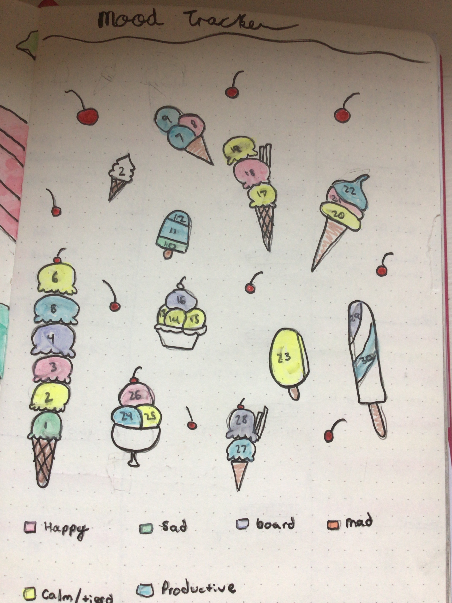
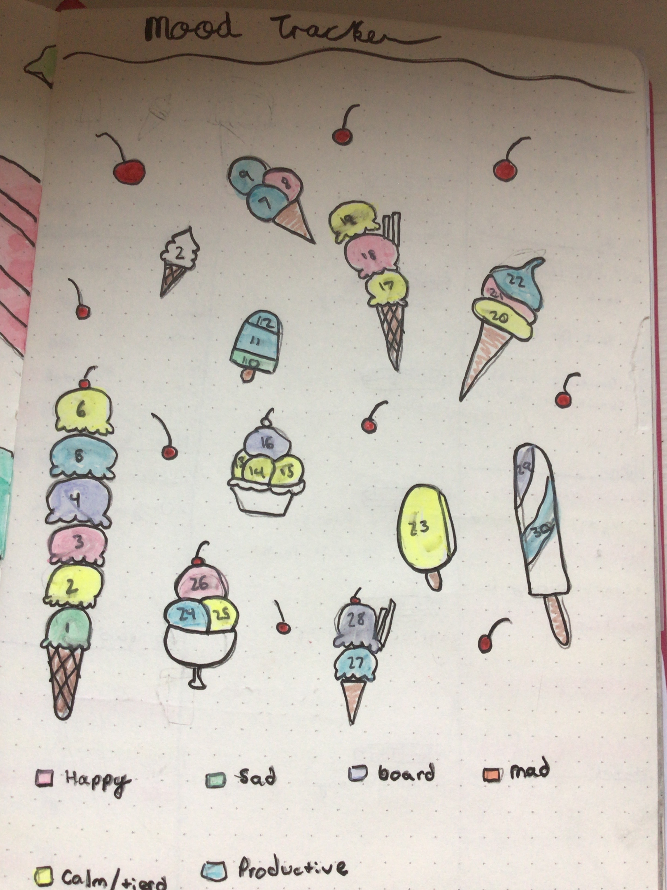
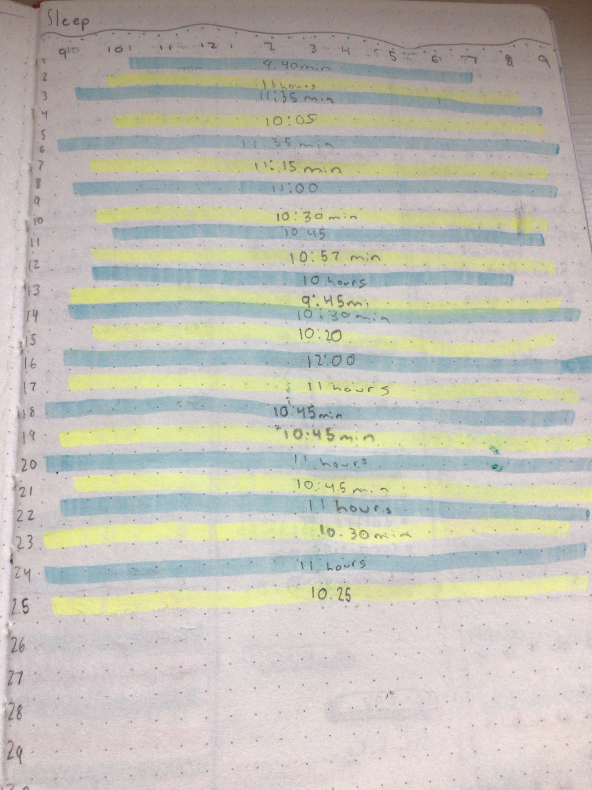
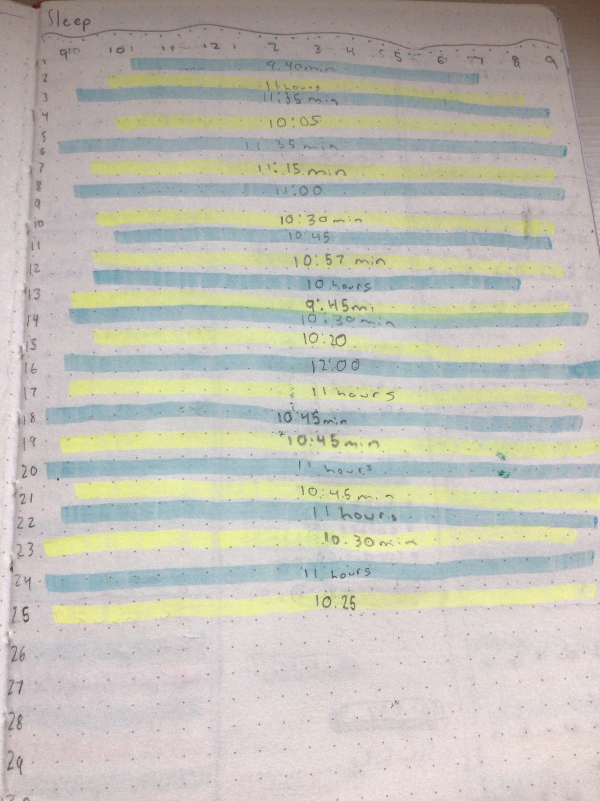

Hi my name is Emma and welcome to my website about Bullet Journeling. If you love to draw and Bullet journel but you dont know were to start I can help. Here you can find pictures of great ideas and good matirials!!
Monthly covers are one of my favorite thing to do. You can do lots of difrent Ideas that you an cary through thrught the month her are some examples below!!


Theese are only some ideas for monthly covers for more ideas click here
Mood trakers are lots of fun to do and it is extra fun when they correspond with the monthly cover like Watermelon and Watermelon theese are only some examples but mood trackers are fun to fill out and fun to make here are a couple more examples of some cool mood trakers you can also refer to the link above!!!

 


Weekly or daily planers is a great way to fill up your notebook and is also a great way to keep track on your week or day and really fun to look back on it is also a good place to right down importat notes and or news about your week or day


Here are just some cool ideas to fill up your journel like quotes, sleep trackers, and more


 

And finaly some good matetrials: I recomend getting some highlighters there are two diffrent ones I recomend but any work, I recomend Either Stablio or Piolt I also recomend getting some colerd pens and black pens. You can also get some thin tapes and stickers theese are only some options you can get as much or as little as you want becuase all pyu really need is a pencil and your creativity.